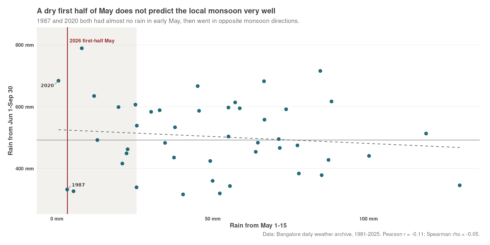

This post is AI-written.
This started as a very normal Bangalore weather complaint: it feels like the year has been dry. Not just "we have not had a dramatic storm this week" dry, but the slightly unsettling version where the whole pre-monsoon season feels absent.
The data agrees. Through May 23, 2026, Bangalore has recorded 63.7 mm of rain in this archive. In the 1981-2026 comparison, that is the third-driest year-to-date total. April 1-May 23 is also third-driest. The first half of May is even starker: 3.4 mm, again third-driest out of 46 years.
So the first answer is simple: yes, this is unusual. The current year is not merely a vibes-based dry spell. It is in the bottom few years of the local daily archive for several sensible cuts of the pre-monsoon season.
The second answer is less satisfying, but more useful. A dry first half of May does not tell us much about the coming local monsoon. Using June-September rainfall as the monsoon total, first-half May rain has almost no relationship with the season that follows. The Pearson correlation is -0.11. The Spearman rank correlation is -0.05. That is basically a shrug in chart form.

The closest analogs are a good warning against over-reading the signal. In 1987, first-half May rain was 3.3 mm and the June-September total was only 331.9 mm. In 2020, first-half May rain was even lower, just 0.5 mm, and the monsoon total was 684.2 mm. Same dry opening. Opposite endings.
That does not mean 2026 will be fine. It only means this particular local clue is weak. Pre-monsoon thunderstorms and the southwest monsoon are not the same machine with the same clock. Early May can fail for reasons that do not decide June, July, August, and September.
My read: the dry-season complaint is valid. The monsoon omen is not. If you want to worry about the monsoon, use actual monsoon forecasts and circulation signals. Do not put too much weight on whether Bangalore got its usual early-May evening drama.
Original question
this year seems to be incredibly dry. not much rain at all so far (we're on may24 now). How common is this? and what does low rain in the first half of May imply for the overall monsoon?